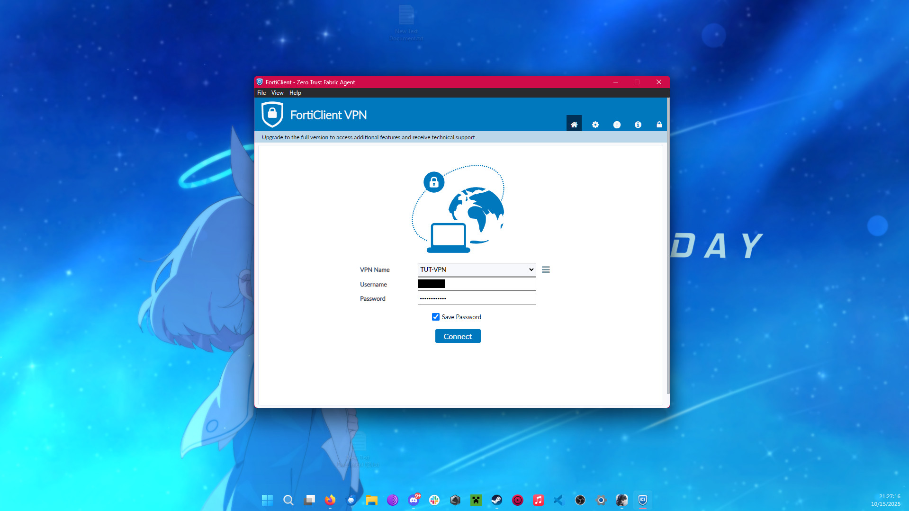
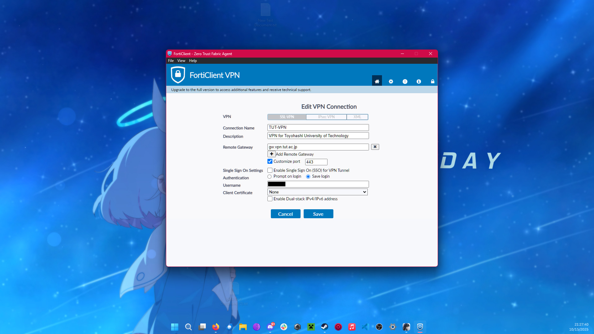
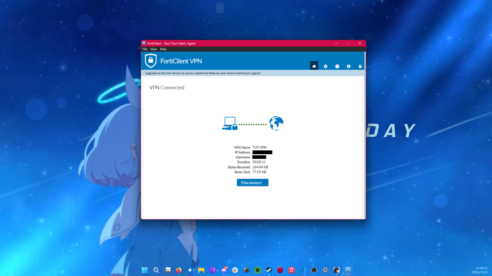

スマートシステム研究室のIPアドレスは情報メディア基盤センターから割り当てられているので学内ネットワークからであればアクセスできます
IPアドレスは元のSlackメッセージを参照してください
手順1.VPNを利用してssh接続する
大学が提供しているサービスを利用する方法です
基本的に上記サイトの手順通りにすると、学内ネットワークにVPN接続できます。



接続完了するとssh接続が可能になります。
ssh <ユーザー名>@133.15.X.X~/.ssh/configは
Host <好きな名前: Lab, Serverなど>
HostName 133.15.X.X
User <ユーザー名>
IdentityFile <秘密鍵へのパス>
TCPKeepAlive yesFortiClient VPN を利用できない/接続できない
openfortivpnを使用しましょう。 特に、Debian,RHEL系ではないLinuxディストリビューションでは、FortiClientVPNが使いにくい、動作しないことがあるようです。
インストール手順はGitHubのInstallingを参考にしてください
# Mac/homebrew
brew install openfortivpn
# Mac/MacPorts
sudo port install openfortivpn
# Arch Linux
sudo pacman -S openfortivpnlinuxでは依存関係としてpppかpppdが必要です。lsmod | grep pppなどで、pppがロードされていることを確認してください。
openfortivpnの最小実行例
sudo openfortivpn gw.vpn.tut.ac.jp:443 -u <imcのユーザー名> -p <imcのパスワード>
# 必要に応じて /etc/openfortivpn/config に host, port, username, password, trusted-cert を保存手順2.大学のサーバーからProxy Jumpする
設定をするときのみ、VPN接続か、学内ネットワークからの操作が必要なので、先に手順1をやってみてできそうならこれも進めてください。 主に自宅デスクトップPCなどからアクセスしたいときに操作が楽になります。
参考にしたサイト 3系 (主にB1) 向けお役立ち情報
ssh接続
DDliaさんのようにvscodeからでも、ターミナルのvim,nano,emacs、フォルダーからメモ帳など、なんでもいいので、~/.ssh/configに追記します。
Hostには自分の好きな名前、HostNameには接続先であるxdev.edu.tut.ac.jp、Userには情報メディア基盤センターから通知されている「アルファベット1文字
+ 学籍番号」を入力します。
Host tutimc
HostName xdev.edu.tut.ac.jp
User r2218XX保存してssh接続確認します。
ssh tutimcEnter password for r2218XX@xdev.edu.tut.ac.jpと言われるので、情報メディア基盤センターのパスワードを入力して接続します。
接続できるとプロンプトが以下のようになります。
[r2218XX@xdev05]~% このまま公開鍵認証の設定もします。
公開鍵と秘密鍵の生成
ターミナル画面を新しく開いて新しく公開鍵、秘密鍵を生成します。鍵ペアは~/.ssh/に生成されます。
cd ~/.ssh
ssh-keygen -t ed25519
Generating public/private ed25519 key pair.
Enter file in which to save the key (/home/<User_Name>/.ssh/id_ed25519):
Enter passphrase (empty for no passphrase):
Enter same passphrase again:
Your identification has been saved in /home/<User_Name>/.ssh/id_ed25519
Your public key has been saved in /home/<User_Name>/.ssh/id_ed25519.pub
The key fingerprint is:
SHA256:prxxSgkz+jUcAWEIn7ohbYOuyn9WUmcsu1hgza5fXwM <User_Name>@<PC_Name>
The key's randomart image is:
+--[ED25519 256]--+
|.. .+. |
| ..o . |
| o + . |
| + o * + |
|= + = = S E |
|o+ o B X . |
|... / o. o |
|o . B B. . . . |
|+...+ +. . |
+----[SHA256]-----+~/.ssh/に秘密鍵id_ed25519と公開鍵`id_ed25519.pubが生成されました。
鍵の名前を変更した場合は、適宜読み替えてください(id_tutimcなど)
公開鍵の配置
生成された公開鍵を確認します。
# Windows
type id_ed25519.pub
# Mac/Linux
cat id_ed25519.pubコピーしておいてもいいですし、scpでファイルを送信してもいいです。
scp ~/.ssh/id_ed25519.pub tutimc:~/.ssh/Mac/Linuxで、ssh-copy-idを使用できるなら、書き込みは不要です。
ssh-copy-id -i ~/.ssh/id_ed25519.pub tutimc公開鍵はtutimcの~/.ssh/authorized_keysに書き込みます。書き込む手段はなんでもいいです。
-#
ファイルを上記の手段で送信していた場合はcatして書き込むと楽
# コピペする場合
vim ~/.ssh/authorized_keys #vim
nano ~/.ssh/authorized_keys #nano
echo "<ここにコピペ>" >> ~/.ssh/authorized_keys
# catする場合
cat ~/.ssh/id_ed25519.pub >> ~/.ssh/authorized_keys
cat ~/.ssh/id_ed25519.pub | tee -a ~/.ssh/authorized_keys #出力も見たいときパーミッション(権限)の設定をします。
ls -laを実行したときに、authorized_keys
が -rw-------になるようにします。
また、~/.ssh/も
-rwx------にします。
chmod 600 ~/.ssh/authorized_keys
chmod 700 ~/.ssh/自分の~/.ssh/configに秘密鍵の場所を追記
このままではsshするときに毎回パスワードを聞かれるので、秘密鍵の場所を追記します。
Host tutimc
HostName xdev.edu.tut.ac.jp
User r2218XX
IdentityFile ~/.ssh/id_ed25519これで、パスワード無しでログインできるはずです。
ssh tutimcProxyJump
tutimcのssh接続設定が完了したので、ProxyJumpは~/.ssh/configに一行追加するだけです。
Host <好きな名前: Lab, Serverなど>
HostName 133.15.X.X
User <ユーザー名>
IdentityFile <秘密鍵へのパス>
TCPKeepAlive yes
ProxyJump tutimc # <-ここの名前は設定した大学のサーバーのHostの名前にするこれで、VPN接続することなく研究室のサーバーに接続できます。